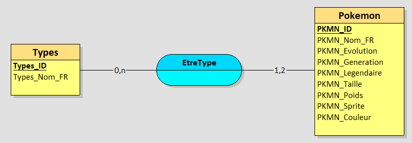
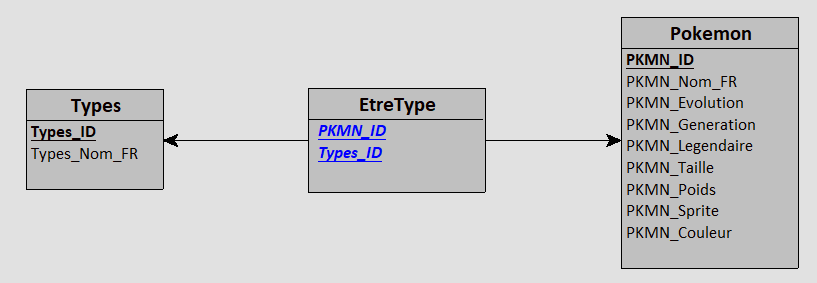
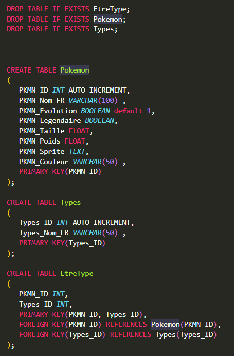
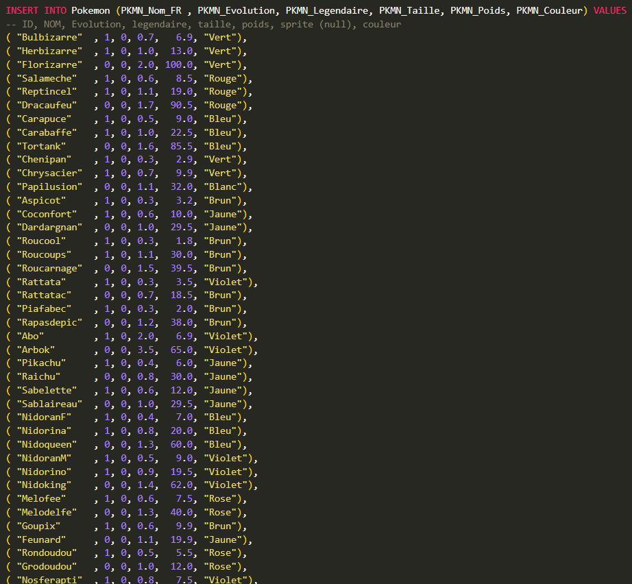
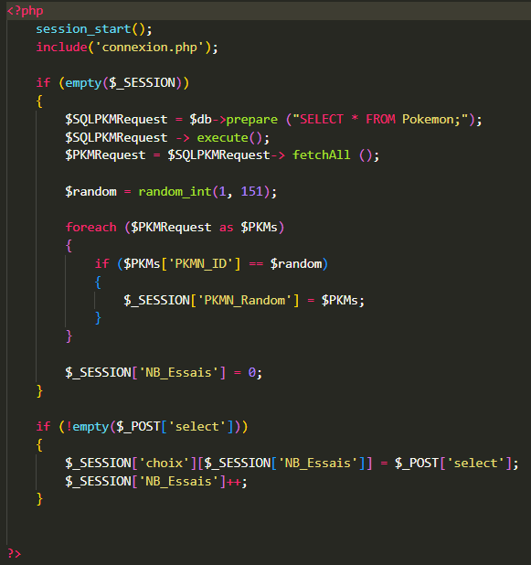
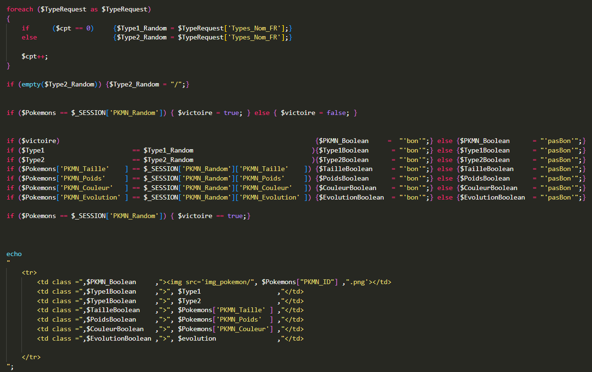
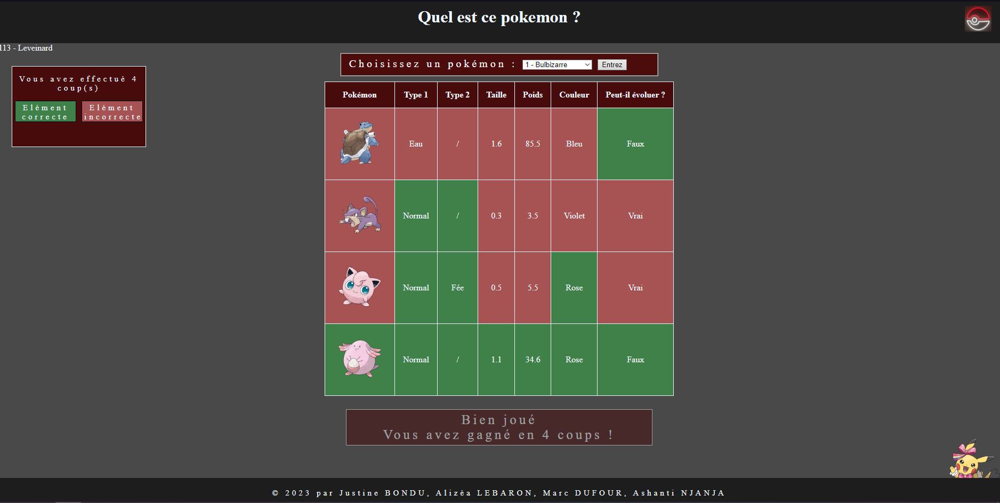
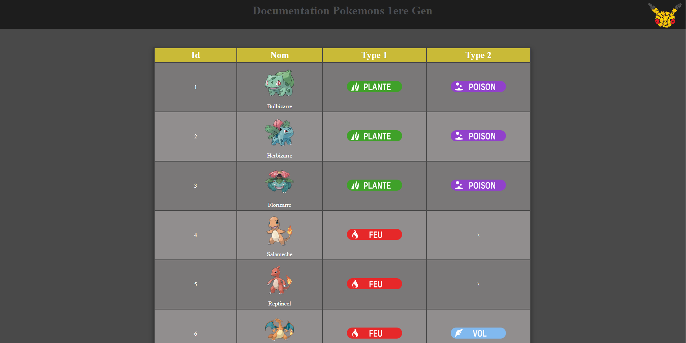
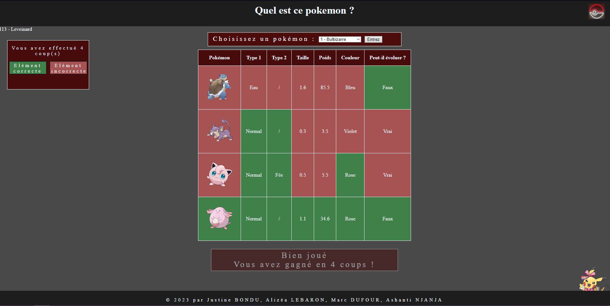
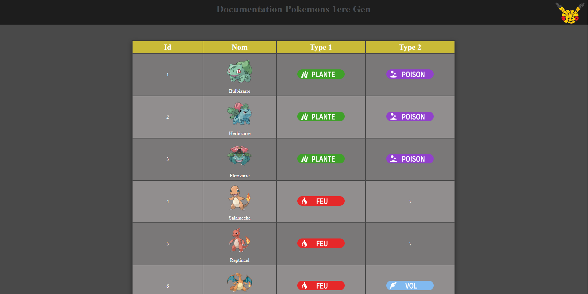

Preuves
SAE 1.03 Installation d'un poste pour le développement
Projet scolaire en groupe de trois, instalation d'une machine virtuelle linux.
Ce projet correspond au 4 Composantes essentielles.
Il correspond aussi aux Apprentissages critiques Analyser un problème avec méthode et Comparer des algorithmes pour des problèmes classiques.
SAE 2.03 Installation de services réseaux
Projet scolaire en groupe, réaliser un projet au choix mais doit être dans un dockfiler sur github.
Nous avons réaliser un "Quel est ce pokemon ?".
Avec une base de données des pokemon de la première génération, 151 pokemons.
Cette base de données est integré dans des page html, grâce au laguage php.
Les modèle Entité/Association et Relationnel


Quelque exemples du code.




Voilà le résultat.
 



Voir notre projet sur github.
Ce projet correspond au 6 Composantes essentielles.
Il correspond au 4 Apprentissages critiques.